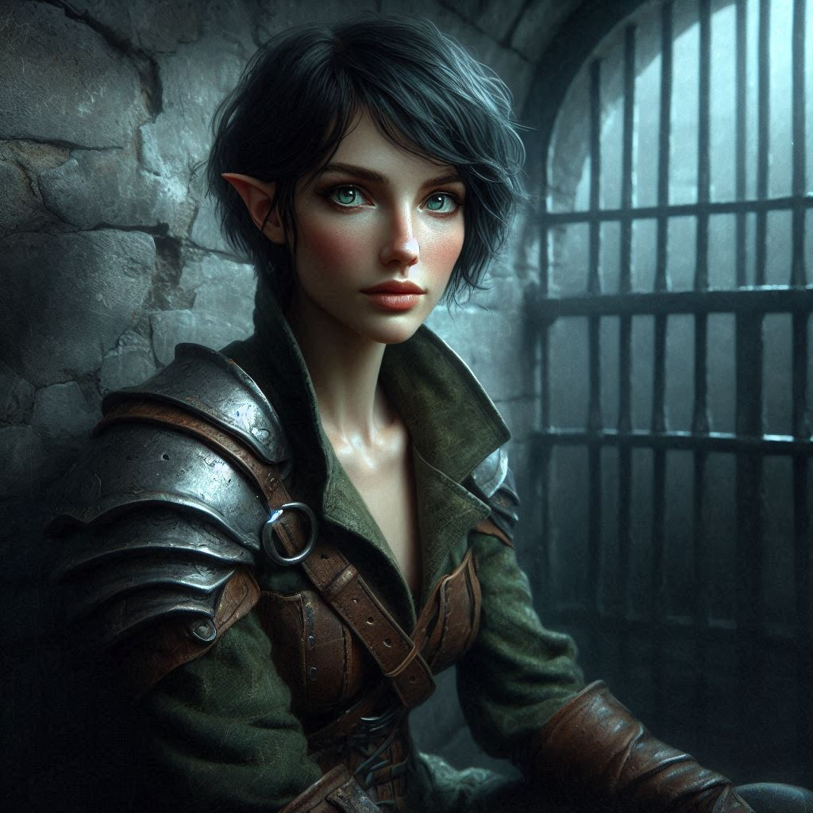

Betrayal in the Shadows
You stand before Princess Hawthorn, her sharp gaze unwavering as the tension between you thickens like the air in Hemlock Caverns. The weight of the decision sits heavily on your shoulders, but there’s no going back now. You tighten your grip on your bow, looking over at Elias, who watches from a few paces behind, his expression a mix of worry and confusion. He trusts you—but this isn’t an easy call.
"I’m sorry, Your Highness," you say, voice steady despite the storm of doubt brewing inside you. "I can’t let you walk away from this. You’re under arrest."
Hawthorn’s eyes widen, her surprise quickly shifting into a cold, calculating anger. "You don’t know what you’re doing, Kira. Arrest me, and you doom us all."
You hesitate, but you keep your bow drawn, your arrow trained on her. "We’ll take our chances. Elias, secure her hands."
Elias steps forward, clearly reluctant but resolute. His hand moves to his sword, ready to enforce your command. Princess Hawthorn, ever regal, raises her chin, defiance flashing in her eyes. "You’re making a grave mistake," she says, voice venomous.
As Elias approaches, Hawthorn glances behind her, and for a brief second, something in the shadows shifts. You sense it just in time—the faintest ripple of magic crawling across your skin.
A sudden jolt of energy explodes from the darkness. Liora, Hawthorn’s sorceress, steps into the open with a sweeping gesture. Before you can react, a bolt of brilliant blue magic streaks toward Elias. It hits him square in the chest, sending him flying backward. He crashes into the cavern wall with a sickening thud, his body crumpling to the ground, unconscious.
"Elias!" you shout, spinning toward him. You drop to one knee, but there’s no time to check if he’s alright.
You rise quickly, twisting around to face Liora, fury boiling in your veins. The sorceress stands at the princess’s side, her fingers buzzing with energy, a smug smile curling her lips. Hawthorn watches silently, her calm demeanor unsettling, as if she’d expected this outcome all along.
"You didn’t think I’d come alone, did you?" the princess says, voice dripping with superiority.
You grit your teeth and pull back your bowstring, aiming for Liora. "I won’t let you escape, either of you."
Liora raises her hand to cast again, but you’re faster. Your arrow flies, aimed directly for her heart. But as if anticipating the attack, Liora swirls her fingers, and the arrow deflects in mid-air, ricocheting harmlessly off the stone.
Before you can draw another, a rush of footsteps echoes through the cavern. From the shadows, a squad of royal guards emerges, their armored forms filling the narrow passage. You’re surrounded.
"Drop the weapon," one of the guards commands, his voice firm and unyielding.
Your heart pounds in your chest. You scan the area, weighing your chances. Outnumbered, Elias unconscious, and with magic at play—you know there’s no victory here. Slowly, you lower your bow, releasing the tension on the string but keeping your grip tight.
"Smart choice," Liora says, her voice sweet with mockery. She steps closer, eyes gleaming as she readies another spell. You tense, bracing for impact, but the wave of magic hits you before you can react. Your vision blurs, the world spinning as a heavy weight presses down on your limbs.
Darkness creeps at the edge of your vision as your body hits the ground. The last thing you hear is Princess Hawthorn’s voice, soft and condescending, "You should’ve listened, Kira."
You wake with a start, gasping for breath. The cold, damp air of the dungeon clings to your skin. Your head throbs, and your limbs feel like lead. Blinking against the dim torchlight, you realize where you are—deep beneath the palace of Yew. Thick stone walls surround you, and the faint dripping of water echoes in the distance.
Chains clink as you shift, realizing your wrists are bound. Panic rises in your chest. You struggle, testing the strength of the restraints, but it’s no use. You’re trapped.
Elias is nowhere in sight, and neither is Hawthorn. The weight of failure settles heavily over you. You had her, you were so close—but now, you’re the one behind bars.
The only thing more crushing than the weight of the chains is the gnawing uncertainty of what comes next.
It would appear you have chosen your allegiance poorly. Now all you can do is watch the outcome of the war from your jail cell.